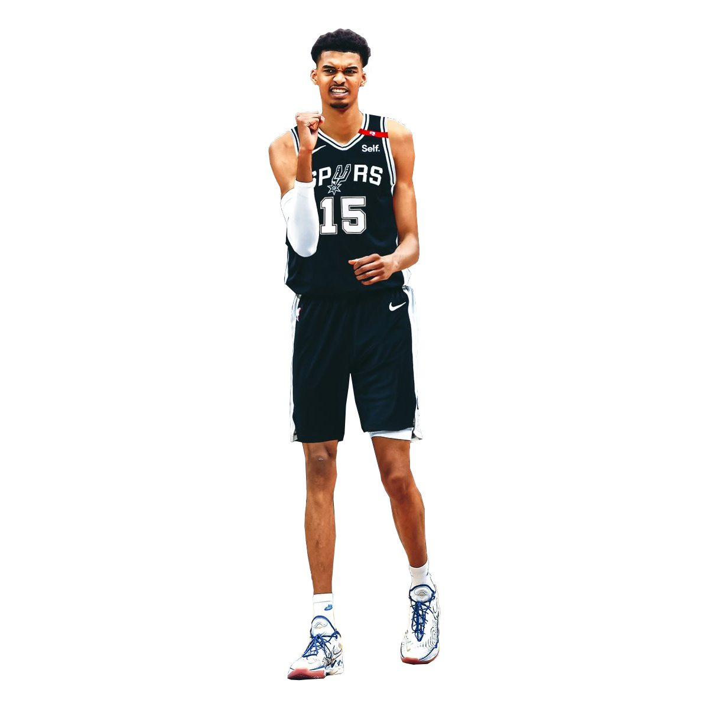
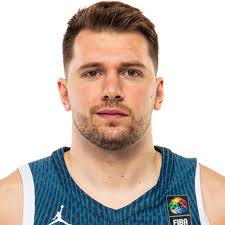

Esta es una pagina que te otorga las mejores jugadas y los juegos más relevantes del basketball
(de jugadores negros)
El primer jugador es Victor Wembanyama ,Victor Wembanyama es un jugador de baloncesto francés, considerado uno de los mayores prospectos en la historia de la NBA. Nació el 4 de enero de 2004 en Francia. Mide 2,24 metros y se destaca por su habilidad en defensa, su capacidad de bloquear tiros y su versatilidad en ataque. Juega como pívot y se unió a la NBA en 2023, siendo seleccionado por los San Antonio Spurs como la primera elección global del draft. Su potencial lo ha hecho muy popular y se le considera un futuro superestrella.

Haz clic a la imagen de luka para regresar a la página principal
